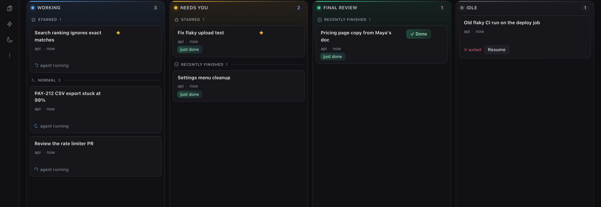
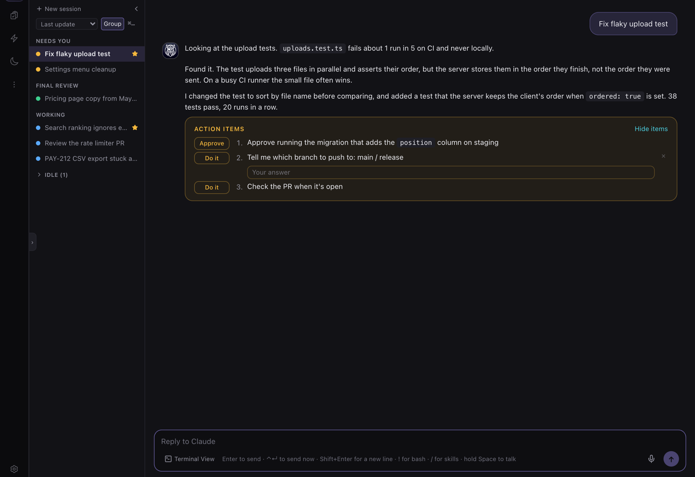
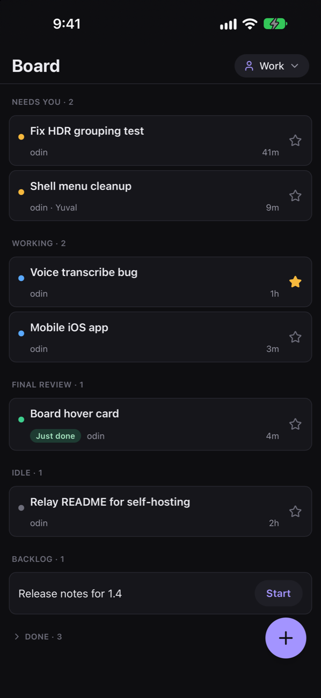
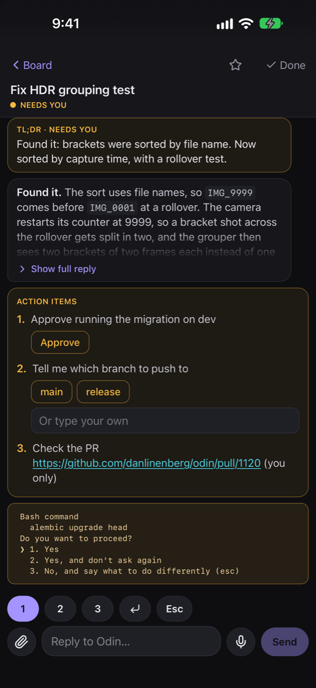

Parallelize agents
at the speed of thought.
Running six agents at once is easy now. Keeping track of six is not. Odin keeps your agents next to the work that drives them, and tells you when one needs you.
brew trust --tap danlinenberg/odin && brew tap danlinenberg/odin && brew install --cask odin

Your queue and your agents, on one screen.
A row in the queue becomes a running session. The session remembers the row it came from. Each step costs you as little attention as Odin can manage.
See what's on you
Every source lands in one queue. React :eyes: to a Slack message and it becomes a row. Badges count what waits on you, not every row.
Hand it to an agent
One click starts a real terminal agent in its own git worktree, with a prompt built from the thread, the issue or the PR.
Notice when it needs you
The board sorts sessions by live agent state. Odin pings you when one asks a question, and lists its action items.
Pick it back up
Each session keeps a written brief and the row it came from, so an hour later you know what happened and why.

Every part buys back a little of your attention.
One queue
Slack, Jira, GitHub, Notion, Email, ClickUp and your own tasks in one list. Badges count what waits on you, not every row.
A board by agent state
Working, Needs you, Final review, Idle. Cards move by what the agent is doing, read from its own hooks.
Ping me
Odin watches a session's Slack thread and pull requests, and pings you when someone replies or a PR is approved.
Action items
Every reply ends with what you have to do next. A choice is a row of buttons, a command gets a Run button.
Briefs
A written answer to “what did I walk into?” for every session, so coming back takes seconds, not a reread.
Huginn
Odin's raven. Ask in plain words for anything Odin can do, and he does it. No hunting for the right screen.
Night Agent
Queue tonight's work. It runs in parallel while the computer stays awake, and waits for review in the morning.
Session History
Search every agent conversation on the machine by what was said in it. Read it, resume it.
Insights
How much lands on you, how much you hand over, how long things wait, and who asks most.
Paced launches
A new session waits for room when the machine is loaded, instead of starting a sixth agent into a swap storm.
Sessions that survive
A background daemon owns every terminal, so sessions live through a closed window, a restart and an update.
Profiles
Work and personal accounts kept apart, one click to switch, on the Mac and on the phone.
Where the work comes from stays part of the work.
A Slack thread, a Jira issue or a pull request is not a link you paste into a prompt. In Odin it is the session's origin: the agent starts from it, the session keeps it attached, and the board shows where every agent's job came from.
- SlackReact :eyes: to a message. The thread, and what was said in it, becomes the prompt.
- Jira and ClickUpIssues assigned to you, with the key and the description.
- GitHubPull requests waiting on your review, with what they change. Bots filtered out.
- Notion and EmailRows from a database you pick, and mail that asks something of you.
Your agents keep going after you stop.
Queue the work you won't get to today. The Night Agent runs those tasks in parallel overnight, on power, while the computer stays awake. The morning starts with finished sessions waiting for review, not a backlog.
Your board, in your pocket.
Pair once by scanning a QR code on your Mac. Then answer an agent from the train, or start a task from a meeting, on Wi-Fi or mobile data.
- The whole boardEvery column, with stars and briefs.
- Reply in the chatType, dictate, or attach photos.
- New tasksPick the repo and start an agent.
- Every profileWork and personal, one tap apart.


Your machine. Your agents. Your keys.
Runs on your machine
Your queue, sessions and briefs stay in your home folder. Released builds send no analytics and no crash reports.
Your agents, your accounts
Odin drives the agent CLI you already use, with your own subscription. Nothing is proxied.
End to end encrypted phone
Only your Mac and your paired phones can read what passes between them. The relay sees encrypted bytes. Read the design.
Hand over the next job.
Free and open source, for macOS on Apple Silicon and Windows.